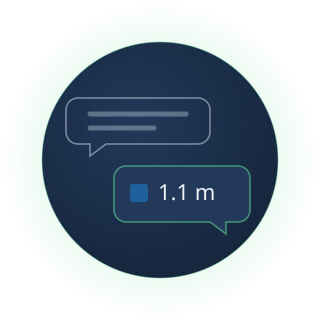

Status
In developmentIn development: not available yet. Book a demo to tell us which sites you would want it for.
Coming next
In developmentAsk Claude or another AI assistant about flood depth at your sites. Our MCP server will give it the same depths, bands and caveats the API returns, in plain words first.

Illustration. An answer in metres, as an assistant might give it. The depth shown is one cell of the Exeter replay's solver run.
Contains Environment Agency information © Environment Agency and/or database right 2026. Flood simulation: LISFLOOD-FP (LISFLOOD-FP developers).
In development: not available yet. Book a demo to tell us which sites you would want it for.
Specification
How it works
Step 1
You will add our MCP server to your AI assistant.
Step 2
Your question about a site will become a call to our API.
Step 3
Your assistant will receive the API's answer unchanged, caveats included.
Data inputs
You
The places you want answers for: your own identifiers, with longitude and latitude.
Ground
Environment Agency LiDAR on a 1 m grid: the bare-earth ground the water runs over.
The storm
Forecast rain for the coming days over each area, from Open-Meteo.
The model
Our machine-learning model, trained on those runs. From a storm's rainfall it gives water depth in metres, with an uncertainty band.
Giving confidence to act before flood becomes disaster.
Book a 20-minute demo to see flood depth maps for areas we serve, and to ask about yours.